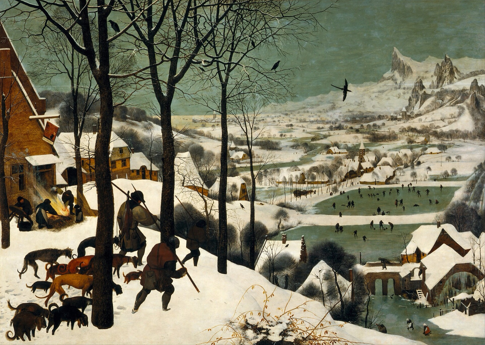

The Hunters in the Snow Explained: All That Effort, One Fox
What Bruegel's most famous winter scene is really showing: a failed hunt, a set of paintings made for a merchant's house, a fire with no pig, and mountains that were never in the Netherlands.

Start with the men, because Bruegel did. Three hunters come over the brow of the hill at the left, heads down, spears over their shoulders, sinking into the snow at every step. Around their legs slinks a pack of dogs, thin and tired, tails low. They have been out all day. And look at what they are bringing home: a single fox, hanging limp from one of the spears.
That is the joke and the sadness of the picture in one detail. The Kunsthistorisches Museum in Vienna, which owns it, puts it simply: only one fox hangs on the spears. All that effort, in all that cold, for one thin animal.
Then the picture opens out. From the hunters' hilltop the ground drops away to a valley full of tiny people, frozen ponds, a church, a mill, and beyond them a line of jagged peaks under a grey-green sky. It looks like a real place on a real afternoon. Almost none of it is quite what it seems.
A painting for a merchant's dining room
The Hunters in the Snow was not painted on its own. It was one of a series showing the times of year, made for the wealthy Antwerp merchant Niclaes Jongelinck, whom the Metropolitan Museum's catalogue calls an avid patron of Bruegel's. Bruegel signed and dated it at the bottom centre, BRVEGEL. M.D.LXV: 1565.
What exactly the series looked like is still argued over. The Met, which owns another panel from it, The Harvesters, sets out the evidence in its catalogue. An inventory of Jongelinck's collection in 1566 mentions "Twelff maenden", twelve months, which suggests twelve panels. But by 1595 the set is described as six paintings representing the twelve months. Most scholars now follow the art historian Charles de Tolnay, who noticed that each panel combines work and pastimes that calendar pictures would normally give to two separate months, and argued that there were six. Others still hold out for twelve. The Met's catalogue admits that the question will probably stay open.
Five panels survive. Some scholars read them not as pairs of months but as six extended seasons, a way of dividing the year that had a tradition in the Netherlands:
| Painting | Season, in the six-part reading | Where it is now |
|---|---|---|
| The Gloomy Day | Early spring | Kunsthistorisches Museum, Vienna |
| Haymaking | Early summer | Czech Republic |
| The Harvesters | Late summer | Metropolitan Museum, New York |
| The Return of the Herd | Autumn | Kunsthistorisches Museum, Vienna |
| The Hunters in the Snow | Deep winter | Kunsthistorisches Museum, Vienna |
On that reading the lost panel showed late spring. In De Tolnay's month scheme the series starts in December, so The Hunters in the Snow stands for December and January. Either way, this is the depth of winter.
The historian Iain Buchanan has suggested, as the Met's catalogue reports, that the panels hung in the dining room of Jongelinck's suburban house, Ter Beken. That is a scholar's informed guess, not a record. But it is a pleasing one: a wealthy merchant eating his dinner surrounded by a whole year of other people's labour, ending in this hilltop of exhausted men.
The fire with no pig
Now go back up the hill and look left, outside the inn with the sign hanging crookedly from its bracket. A small group is busy around a blazing fire. A woman in an apron stirs it with a long stick, a man carries off a table, a child stands and watches, and a great bundle of straw leans against the wall. The flames stream sideways.
According to the Kunsthistorisches Museum, these are preparations to singe a pig over the fire. But look for the pig and you won't find one. Everything needed for the job is ready, but the animal itself is not in the picture. Not every writer reads the scene the same way: Sister Wendy Beckett, in 1000 Masterpieces, describes the family as roasting a pig. The museum's wording, "preparations are afoot", fits what you can actually see better.
So the hunters return with a single fox, and the villagers are getting ready for a pig nobody can see. Food is on everyone's mind, and there is not much of it in view.
Down on the ice
Let your eye fall down the slope, the way the line of trees and the hunters' path lead it. At the bottom are frozen ponds, and on them dozens of tiny figures. Some skate, one lies flat on the ice, some bend over a game played with sticks, and others just stand and watch. A dog trots along the edge. The museum says details like these have done much to make the picture so popular.
Beckett reads them more darkly: even the skaters, she suggests, seem hemmed in by their small occupations, while only the birds fly free. Both are true to the painting. From the hilltop the people on the ice look carefree and very small, which is part of what makes the scene feel so vast and so cold.
Above it all are the birds. Black crows sit in the bare branches near the hunters, and one glides out over the valley, wings spread. Notice how the sky and the ice share the same grey-green. The Kunsthistorisches Museum says that Bruegel's real achievement is not the sum of the details but the overall effect, the impression of a cold that never lets up. It calls this the first and most prominent winter landscape in European painting.
Mountains that never stood in Flanders
Look right, to the far horizon. Those sharp, snow-covered crags have nothing to do with the flat country around Antwerp. Beckett calls the setting specifically northern, but not Bruegel's own flat Netherlands: an ideal world seen from a great height.
The Met's catalogue gives the scholarly term. The art historian Fritz Novotny described the landscapes of this series as Mischlandschaften, "mixed landscapes", partly invented and partly drawn from studies Bruegel brought back from his journey to Italy. Ian Chilvers's Oxford Dictionary of Art and Artists says that crossing the Alps affected Bruegel more than any art he saw in Italy, and quotes his early biographer Karel van Mander: Bruegel "swallowed all the mountains and rocks" and spat them out again on his canvases and panels. Chilvers adds a caution: most of the Alpine drawings once linked to that trip have since been reattributed to other artists.
So the view is built, not observed. A Flemish village, Alpine peaks and a hilltop vantage no one could stand on, stitched together so smoothly that it feels like a real place on a real afternoon.
A gift for an archduke
The panels did not stay with Jongelinck for long. In February 1566, according to the Met's catalogue, Jongelinck pledged them to the city of Antwerp as security for a debt. In July 1594 the city presented the set to Archduke Ernst, governor of the Spanish Netherlands, for his triumphal entry into Antwerp. When Ernst died the next year they passed to his brother, the Emperor Rudolf II. By 1659 they were recorded in Vienna, in the collection of Archduke Leopold Wilhelm.
There is a twist in how the picture was valued. In 1784, the Met's catalogue records, The Harvesters and The Return of the Herd hung in the Belvedere in Vienna in a grouping meant to stand for the Four Seasons, while The Hunters in the Snow and The Gloomy Day were kept in storage. Today it hangs in the Kunsthistorisches Museum, which has fourteen paintings by Bruegel, almost a third of his surviving output.
Living with winter
In a gallery, most people give The Hunters in the Snow a minute: the hunters, the skaters, the mountains. It is a picture that pays you back for far longer. The fox takes a moment to find. So does the table at the fire, the fallen skater, the crow halfway across the valley, the bridge with a figure crossing it at lower right.
The panel is wide, roughly seven units across to five high, so it fills most of a 16:10 Mac screen. artbip shows the whole of it, uncropped, with the hunters on the left and the peaks on the right both kept in view, and at desktop size the dogs, the fire and the skaters are all still readable. Leave it up for a few days in winter and you will keep finding something new. The app also has a longer note on the painting, with each statement checked against the museum's record and published sources.
Sources
- Hunters in the Snow (Winter) — Kunsthistorisches Museum, Vienna
- Maryan W. Ainsworth and Keith Christiansen (eds.), From Van Eyck to Bruegel: Early Netherlandish Painting in The Metropolitan Museum of Art (Metropolitan Museum of Art, 1998), entry on The Harvesters and introduction
- Ian Chilvers, The Oxford Dictionary of Art and Artists (4th edition, Oxford University Press, 2009)
- Wendy Beckett, Sister Wendy's 1000 Masterpieces (Dorling Kindersley, 1999)